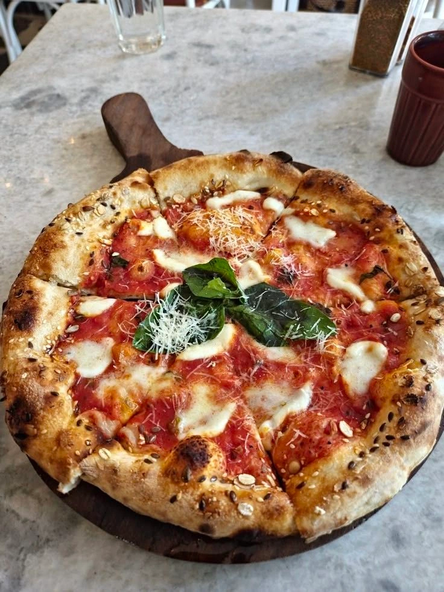
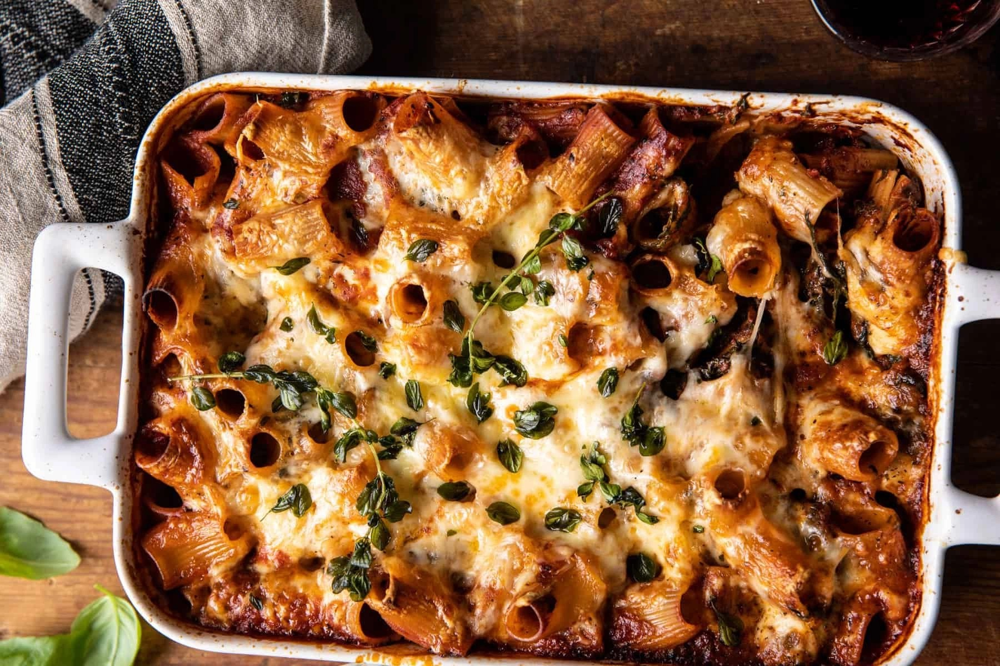
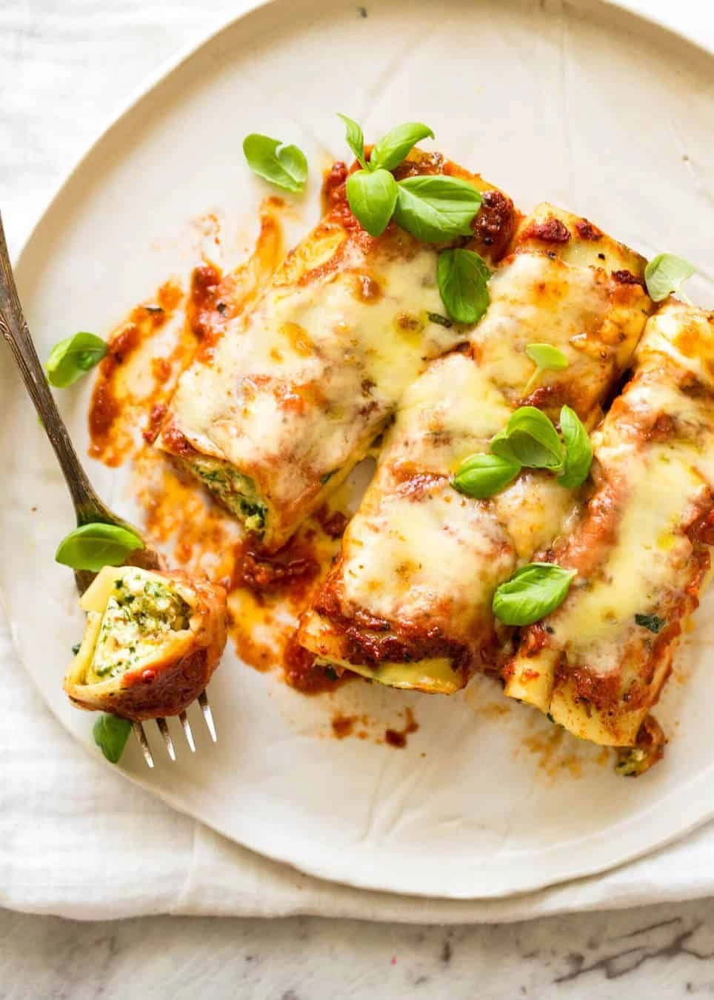
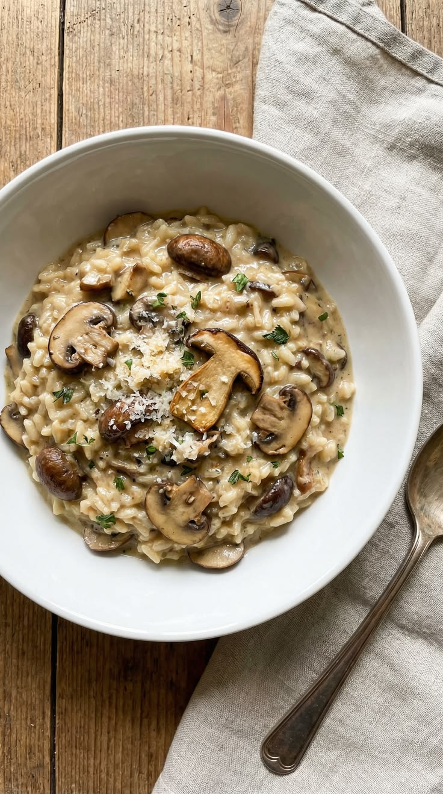
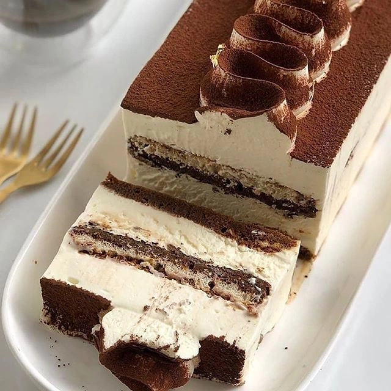
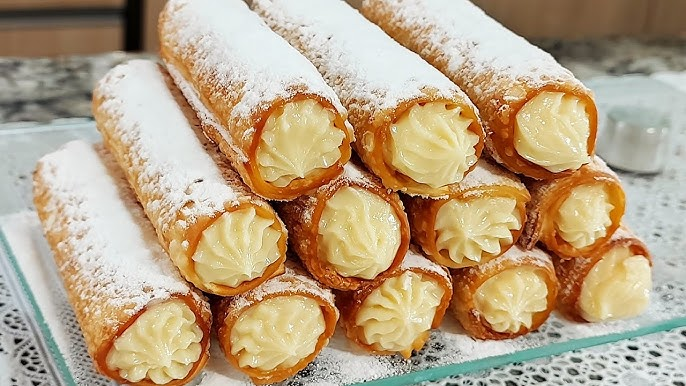
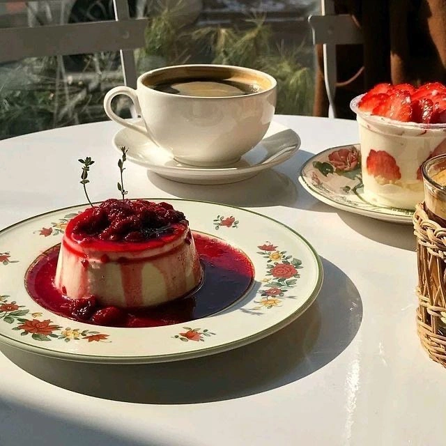

Clássico napolitano
Pizza Margherita
Feita com molho de tomate, mussarela e manjericão fresco, regada em azeite de oliva e sal — uma homenagem às cores da bandeira italiana.

Da Itália para a sua mesa
A culinária italiana é uma das mais saborosas do mundo. Com pratos que envolvem os mais variados tipos de vegetais, carnes e massas, não há quem resista aos encantos desta gastronomia. Todo este sabor tem origem na própria história do país — com o passar dos séculos, a história e a culinária italiana evoluíram juntas.

Feita com molho de tomate, mussarela e manjericão fresco, regada em azeite de oliva e sal — uma homenagem às cores da bandeira italiana.

Camadas de massa intercaladas com molho de carne (ragù), queijo ricota ou bechamel, finalizadas com mussarela derretida.

Risoto cremoso feito com arroz Arborio, açafrão, manteiga, vinho branco e queijo Parmigiano-Reggiano.

Camadas de biscoitos champanhe embebidos em café, intercaladas com creme de mascarpone e finalizadas com cacau em pó.

Casquinha frita e crocante recheada com creme de ricota doce, podendo levar frutas cristalizadas, chocolate ou pistache.

Sobremesa cremosa de creme de leite, açúcar e gelatina, servida com calda de frutas vermelhas, caramelo ou chocolate.